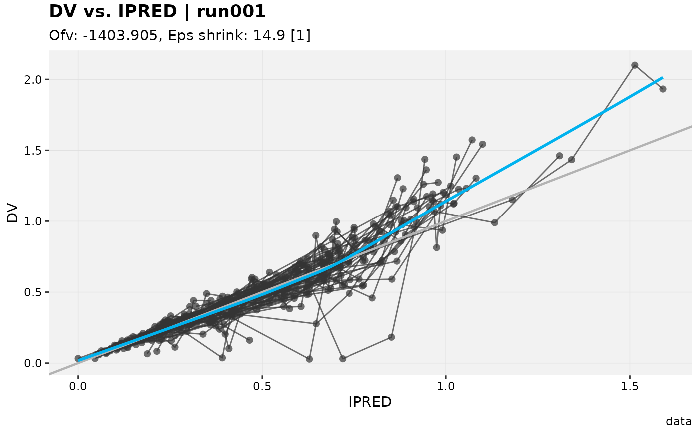

Resolves title/subtitle/caption/tag labels for plot from (in
increasing precedence):
the
xpose.xtras.default_labsR option (a named list, see examples),defaults set on
xpdbviaset_default_labs(), whenxpdbis supplied (a rendered plot does not retain enough of its sourcexpdbto look this up automatically – pass it explicitly),values passed directly via
....
By default only labels not already set on the plot are filled in; set
overwrite = TRUE to replace existing labels too.
print.xpose_plot() calls this automatically
whenever xpose.xtras.auto_apply is enabled (the default; see
set_xtras_options()), but apply_default_labs() itself is a
standalone function that doesn't depend on that print method existing,
so it works the same regardless of whether that method survives issue
#36's eventual removal.
Arguments
- plot
<
ggplot> or <xpose_plot> object- ...
<
dynamic-dots> Direct overrides fortitle/subtitle/caption/tag, taking precedence over both the option- andxpdb-level defaults- xpdb
<
xpose_data> or <xp_xtras> objectplotwas built from, used to resolvexpdb-level defaults (seeset_default_labs()) and to resolve@keywordplaceholders in any of the labels. If omitted andplotis anxpose_plot,@keywordplaceholders are still resolved (using the reduced context xpose attaches to the plot) butxpdb-level defaults are not available- overwrite
<
logical> Replace labels already present onplot(defaultFALSE, meaning only missing labels are filled in)
See also
set_xtras_options() for the full list of xpose.xtras.*
session options, and get_xtras_option() to check which tier
(option/xpdb) is currently dominant for a given xpdb.
Examples
options(xpose.xtras.default_labs = list(caption = "Draft -- do not distribute"))
p <- xpose::dv_vs_ipred(xpose::xpdb_ex_pk)
#> Using data from $prob no.1
#> Filtering data by EVID == 0
apply_default_labs(p)
#> `geom_smooth()` using formula = 'y ~ x'

options(xpose.xtras.default_labs = NULL)